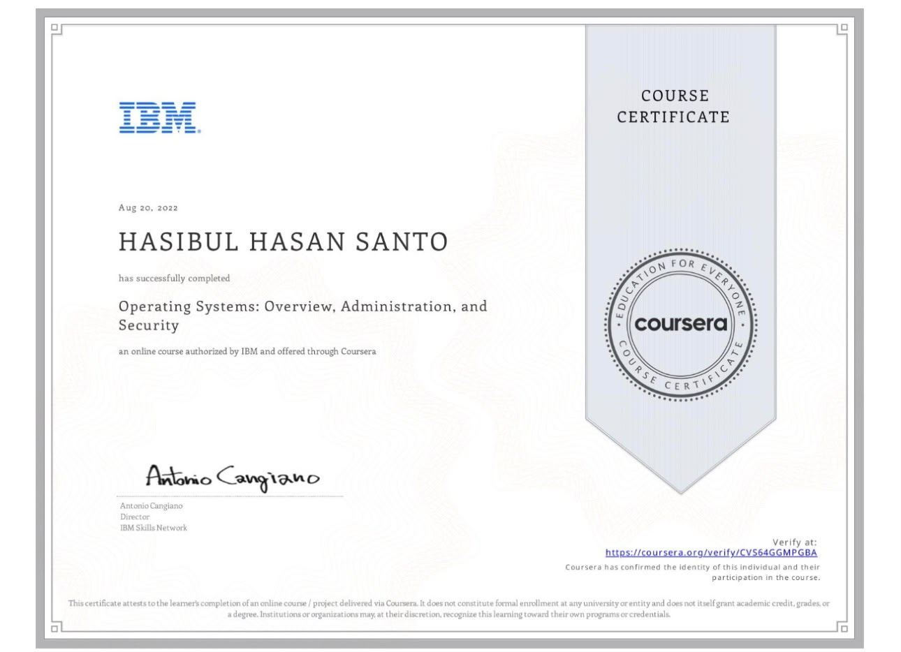

HELLO, I'M
IT Engineering student focused on Data Center Infrastructure, Networking, Cloud Computing and Cybersecurity. Passionate about learning, troubleshooting and building practical technical skills.
> GET TO KNOW ME
> whoami
IT Engineering Student
> university
South-Eastern Finland University of Applied Sciences (Xamk)
> location
Finland
> education
Bachelor of Engineering – Information Technology
I am an Information Technology Engineering student at South-Eastern Finland University of Applied Sciences (Xamk), Finland.
My studies and practical learning have given me knowledge in networking, data center infrastructure, operating systems, cloud computing and cybersecurity.
I am particularly interested in data center operations, system monitoring, troubleshooting, infrastructure and critical IT environments.
> TECHNICAL CAPABILITIES
Data center infrastructure, cooling systems, cabling, monitoring and operational fundamentals.
IPv4/IPv6, subnetting, VLANs, Cisco networking, troubleshooting and ACL fundamentals.
Linux administration, service monitoring, troubleshooting and system management.
Cloud fundamentals, AWS infrastructure concepts and AWS Academy Cloud Foundations knowledge.
Network security, cybersecurity fundamentals, compliance and security practices.
Fault detection, monitoring, troubleshooting and practical IT problem solving.
MY PROFESSIONAL LEARNING

Operating Systems: Overview, Administration, and Security
View CertificateMY PRACTICAL LEARNING
Practical networking and troubleshooting exercises using Cisco Packet Tracer.
Practical exercises involving Linux systems, services and administration.
Practical learning related to network security and secure remote access.
Studies related to data center infrastructure, cooling systems and thermal management.
CAREER INTEREST
Interested in monitoring, infrastructure, cooling systems and critical environments.
Interested in networking, operating systems, cloud and infrastructure technologies.
Continuously developing knowledge in network security and cybersecurity.
LET'S CONNECT
I am open to professional opportunities, internships, IT roles and opportunities to develop my technical skills.